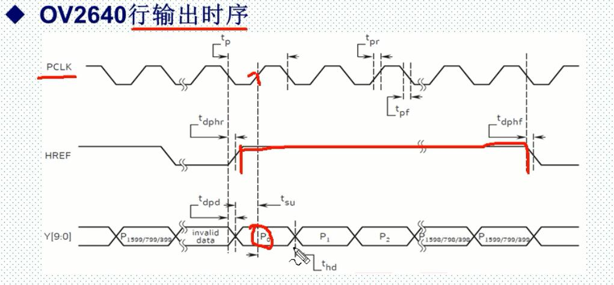
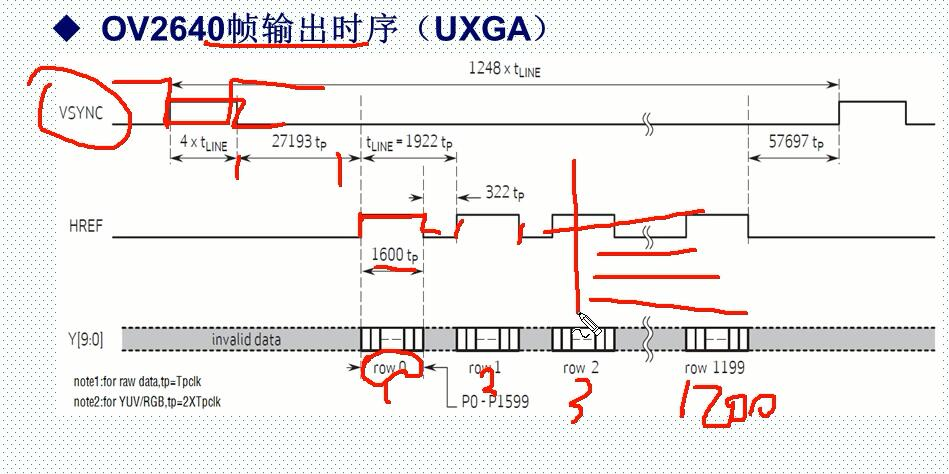
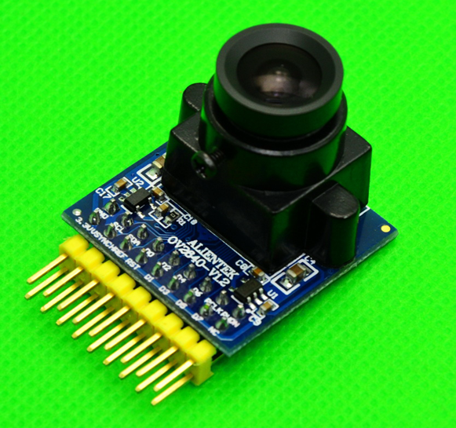
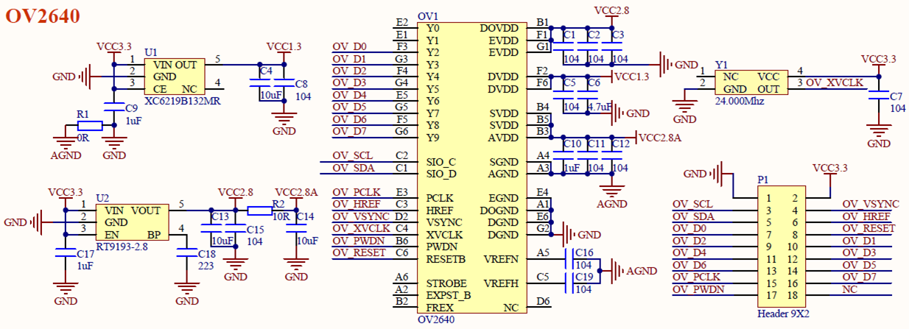
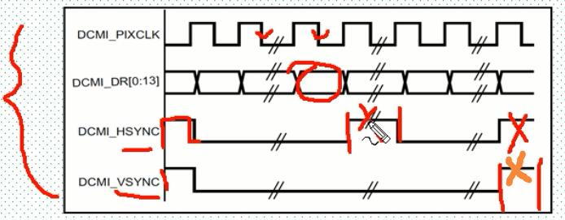
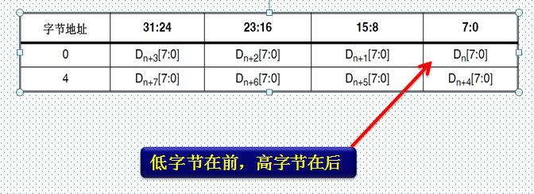
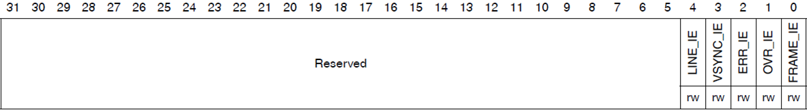

OV2640是OmniVision公司生产的一颗1/4寸的CMOS UXGA（1632*1232）图像传感器。该传感器体积小、工作电压低，提供单片UXGA摄像头和影像处理器的所有功能。通过SCCB 总线控制，可以输出整帧、子采样、缩放和取窗口等方式的各种分辨率8/10位影像数据。UXGA最高15帧/秒（SVGA可达30帧，CIF可达60帧）。用户可以完全控制图像质量、数据格式和传输方式。所有图像处理功能过程包括伽玛曲线、白平衡、对比度、色度等都可以通过SCCB接口编程。
1200行，1600列
ov2640行输出时序

PCLK控制下 PCLK上升沿，HREF行有效信号高电平期间，每一个PCLK上升沿 会读取数据一个字节或者一个像素的数据Y[]，RGB565两个PCLK上升沿才会组成一个数据 最大1599（1600个数据，一行数据）
图像数据在HREF为高的时候输出，当HREF变高后，每一个PCLK时钟，输出一个字节数据。比如我们采用UXGA时序，RGB565格式输出，每2个字节组成一个像素的颜色（低字节在前，高字节在后），这样每行输出总共有16002个PCLK周期，输出16002个字节
PCLK时钟最大达36M，如果MCU速度不够快，就得降低PCLK的频率，或者提高MCU频率
ov2640帧输出时序 
帧输出时序以行为单位， 有一个帧同步信号VSYNC ，一个脉冲表示帧开始 ，帧脉冲高有效低有效可自己设置，帧通道信号来了之后 ，在27193tp以后 ，HREF变高，说明行数有效， 有1600tp，读取1600个数据 ，接着第二行，最后到1200行 ，最后完成了1200行数据的采集，每一行都有1600tp ，完成了1帧图像的采集。
OV2640支持：RGB565或JPEG输出。RGB565输出时，时序如图所示。JPEG输出时，PCLK大大减少，且HREF不连续，数据流以0XFF,0XD8开头，以0XFF,0XD9结束，将此间数据保存为.jpg即可在电脑打开查看。
左下角小字，如果raw_data，1tp = 1T_PCLK ,如果RGB 1tp = 2T_PCLK.
ov2640窗口设置
传感器窗口设置（OV2640_Window_Set）
在传感器里面开窗，开窗范围从22~16321220。传感器窗口设置，通过：0X03/0X19/0X1A/0X07/0X17/0X18等寄存器设置，寄存器定义请看OV2640_DS(1.6).pdf这个文档（下同）
图像尺寸设置（OV2640_ImageSize_Set）
DSP输出（最终输出到LCD的）图像的最大尺寸，该尺寸要小于等于前面我们传感器窗口设置所设定的窗口尺寸。图像尺寸通过：0XC0/0XC1/0X8C等寄存器设置。
图像尺寸设置（OV2640_ImageSize_Set）
在我们前面设置的图像尺寸里面，再一次设置窗口大小，该窗口必须小于等于前面设置的图像尺寸。该窗口设置后的图像范围，将用于输出到外部。图像窗口设置通过：0X51/0X52/0X53/0X54/0X55/0X57等寄存器设置。
图像输出大小设置（OV2640_OutSize_Set）
图像输出大小设置，控制最终输出到外部的图像尺寸。该设置将图像窗口设置所决定的窗口大小，通过内部DSP处理，缩放成我们输出到外部的图像大小。该设置将会对图像进行缩放处理，如果设置的图像输出大小不等于图像窗口设置图像大小，那么图像就会被缩放处理，只有这两者设置一样大的时候，输出比例才是1：1的。图像输出大小通过：0X5A/0X5B/0X5C等寄存器设置。
ATK-OV2640模块具有如下特点：
实物图

原理图

对外接口 


DCMI是STM32F4芯片自带的一个数字摄像头接口，该接口是一个同步并行接口，能够接收外部8位、10位、12位或 14位 CMOS 摄像头模块发出的高速数据流。可支持不同的数据格式：YCbCr4:2:2/RGB565逐行视频和压缩数据 (JPEG)。
DCMI接口可接收高速（可达 54 MB/s）数据流。该接口包含多达14条数据线(D13-D0)和一条像素时钟线(PIXCLK)。像素时钟的极性可以编程，因此可以在像素时钟的上升沿或下降沿捕获数据。
1。 数据据输入（D[0:13]），接摄像头的数据输出。 （这里2640只用输出8条，D0-D7）
2。 水平同步（行同步）输入（HSYNC），接摄像头的HSYNC/HREF信号。
3。 垂直同步（场同步）输入（VSYNC），接摄像头的VSYNC信号。
4。 像素时钟输入（PIXCLK），接摄像头的PCLK信号。

DCMI接口的数据与PIXCLK（即PCLK）保持同步，并根据像素时钟的极性在像素时钟上升沿/下降沿发生变化。HSYNC（HREF）信号指示行的开始/结束，VSYNC信号指示帧的开始/结束。  图中，对应设置为：DCMI_PIXCLK的捕获沿为下降沿，DCMI_HSYNC和DCMI_VSYNC的有效状态为1。
注意：这里的有效状态实际上对应的是指示数据在并行接口上无效时，HSYNC/ VSYNC引脚上面的引脚电平。
DCMI接收到的数据，存储在DCMI_DR寄存器（32位）里面，我们接ATK-OV2640采用8位数据宽度，所以每4个像素时钟，才会捕获完32位数据，（也就是每次收到4个PCLK，才把EDCMI_DR寄存器填满），第一个字节存放在LSB位置，第四个字节存放在MSB位置，（低字节在前，高字节在后），如下图所示:

DCMI支持DMA传输，当DCMI_CR寄存器中的CAPTURE位置1时，激活DMA接口。
摄像头接口每次在其寄存器(DCMI_DR)中收到一个完整的32位数据块时，都将发一个DMA请求，由DMA将DCMI_DR寄存器的值搬运到目的地址(比如LCD/SRAM)。 
DCMI的DMA请求是映射在DMA2通道1的数据流1上面的，所以配置DMA时，应该配 置这个。
另外，如果是直接DCMIDMALCD的传输方式，因为LCD是16位宽（RGB565）， 而DCMI_DR是32位宽，所以，一次DCMI引起的DMA传输，将引发往LCD写2次数据.
模式：DCMI支持连续模式和快照模式，我们一般采用连续模式。
同步方式：DCMI支持内嵌码同步和硬件同步两种方式，我们一般采用硬件同步。
硬件同步模式下使用两个同步信号 ：HSYNC和VSYNC。根据摄像头模块/模式的不同，可能在水平（行）/垂直（场）同步期间内发送数据。由于系统会忽略HSYNC/VSYNC信号有效电平期间内接收的所有数据，HSYNC/VSYNC 信号相当于消隐信号。

ENABLE，用于设置是否使能DCMI。在使能之前，必须将其他配置设置好。 （先配置其他，再使能，倒数第二）
FCRC[1:0]，这两个位用于帧率控制，我们捕获所有帧，所以设置为00即可。 （可设置像取1.3.5帧...这样）
VSPOL，用于设置垂直同步极性，也就是VSYNC引脚上面，数据无效时的电平状态，根据前面说所，我们应该设置为0。 (YSYNC有效时电平状态和设置相反)
HSPOL，用于设置水平同步极性，也就是HSYNC引脚上面，数据无效时的电平状态，同样应该设置为0。 (HSYNC有效时电平状态和设置相反)
PCKPOL，用于设置像素时钟极性，我们用上升沿捕获，所以设置为1。
CM，用于设置捕获模式，我们用连续采集模式，所以设置为0即可。 (快照模式设置1) CAPTURE，用于使能捕获，我们设置为1。该位使能后，将激活DMA，DCMI等待第一帧开始，然后生成DMA请求将收到的数据传输到目标存储器中。 （一般最后设置CAPTURE这位，CAPTURE位必须在其他所有配置（包括DMA）完成后，才使能！）

五个位有效，这里只介绍FRAME位。
FRAME_IE，捕获完成中断使能位。实际上就是帧中断。
我们在jpeg数据处理的时候，要用到帧中断，所以设置该位为1。
1. 配置相关引脚的复用功能，使能DCMI时钟。
要用DCMI，先要使能DCMI的时钟。其次要设置DCMI的相关引脚为复用输出，以便连接ATK-OV2640模块。
2. 设置DCMI工作模式及PCLK/HSYNC/VSYNC等参数。
DCMI接口，我们使用8位接口，连续模式，根据OV2640模块的输出时序图，设置：PCLK为上升沿有效，（有效电平）， HSYNC和VSYNC为低电平有效。同时还要设置帧中断（jpeg数据采集用）等参数。
3. 设置DMA。
DCMI数据，我们一般采用DMA来搬运，所以，设置好DCMI相关参数后，需要设置DMA，以便采集数据。
4. 启动DCMI传输。
最后，设置DCMI->CR的最低位为1(CAPTURE位置1)，即可启动DCMI捕获图像数据。